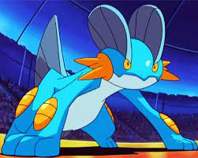

Su nombre en inglés podría provenir de las palabras swamp (pantano en inglés) y rampart (terraplén en inglés), o también de expert (experto), probablemente refiriéndose a que es la etapa evolutiva final de Mudkip, y posee suficiente experiencia como para llamarle experto.
En japonés, su nombre podría provenir de lagoon (estero, laguna en inglés) y large (grande en inglés).
Su nombre en francés, Laggron, proviene de lagon (laguna) y gronder (grande), gros (grueso) o ground (tierra).
Su nombre en alemán, Sumpex, es una combinación de la palabra alemana sumpf (pantano) y de rex (rey en francés) o de expert (experto).
Etimología
Biología
Swampert se caracteriza por ser una de las evoluciones de un Pokémon inicial más fuertes, debido a sus brazos enormes, es capaz de levantar un autobús con facilidad. Su fuerza también le ayuda a la hora de atacar, puesto que sus poderosas extremidades le permiten aferrarse al suelo al usar Agua lodosa o Terremoto. También puede predecir tormentas con sus aletas. Si está a punto de estallar una, empezará a apilar piedras para resguardarse de las tormentas. Puede acumular la humedad del agua y crear un poderoso Hidrocañón.
Gracias a su fuerza es capaz de arrastrar rocas de más de una tonelada, o barcos grandes y pesados con gran facilidad debido a las aletas de su cabeza, su cola y sus anchos brazos. No tendrá problema para bucear en aguas cenagosas ya que tiene el sentido de la vista muy desarrollado. Es un nadador rápido y puede nadar tan rápido como un jet ski, también es veloz en tierra como se puede apreciar en el EP308 donde uno esquiva con gran velocidad el ataque del Seviper de Jessie y del martillazo del Corphish de Ash.
Puede llegar a ser enormemente agresivo en estado salvaje, sobre todo si se trata de proteger su nido, pero esto no impide que llegue a ser bastante pasivo con su entrenador dependiendo de cómo le trate este.

A pesar de que por su apariencia semeja que los ataques eléctricos le podrían causar grandes daños, al ser de tipo tierra es inmune a la electricidad. Pero a causa de esto, es doblemente débil contra el tipo planta y a la liofilización, ya que también es de tipo agua.
Se podría decir que vive en terrenos pantanosos, pero la descripción de la Pokédex de Pokémon Rojo Fuego y Verde Hoja dice que habitan en jerarquías sobre hermosas playas. Suele cazar escondido en el fango, y luego atacando.
Evolución
Mudkip evoluciona a Marshtomp en el nivel 16. Marshtomp evoluciona a Swampert en el nivel 36. Swampert no evoluciona

Mega-Swampert
En Pokémon Rubí Omega, Zafiro Alfa y la séptima generación y solo durante los combates, Swampert puede Megaevolucionar a Mega-Swampert gracias a la Swampertita. Mantiene sus tipos y su habilidad cambia a nado rápido. Su color azul se vuelve más pálido y gana en peso y altura. Sus aletas se vuelven más largas y la parte del final se vuelve recta. El número de baldosas naranjas que posee en sus extremidades aumenta y cambian ligeramente de color y forma. Las prolongaciones de sus mejillas se alargan y ahora son tres en vez de dos. Los dedos de sus extremidades, que son ahora más fuertes, adquieren un color negro. Su físico también aumenta notablemente. Todas sus características aumentan.
Al megaevolucionar, su grito también es diferente.

Movimientos
Subiendo de nivel
(Esta lista es únicamente de Diamante Brillante y Perla Reluciente,
si desea saber sobre las demas generaciones consulte --aquí--)
Con la ayuda de un tutor de movimientos Swampert es capaz de aprender:
| Nivel | Movimiento | Tipo | Clase |
|---|---|---|---|
| 1 | Disparo lodo |  |  |
| 1 | Machada |  | |
| 1 | Terremoto | | |
| 1 | Surf |  | |
| 1 | Placaje |  | |
| 1 | Gruñido | | |
| 1 | Pistola agua | | |
| 1 | Golpe roca | | |
| 9 | Lanzarrocas |  | |
| 12 | Protección | | |
| 15 | Supersónico | | |
| 20 | Hidropulso | | |
| 25 | Avalancha | | |
| 30 | Derribo | | |
| 35 | Amnesia |  | |
| 42 | Agua lodosa | | |
| 49 | Chirrido | | |
| 56 | Esfuerzo | | |
| 63 | Hidrobomba | | |
MT, DT y MO
(Esta lista es únicamente de Diamante Brillante y Perla Reluciente,
si desea saber sobre las demas generaciones consulte --aquí--)
Con la ayuda de un tutor de movimientos Swampert es capaz de aprender:
| MT | Movimiento | Tipo | Clase |
|---|---|---|---|
| C1,1 | C1,2 | C1,3 | C1,4 |
| C2,1 | C2,2 | C2,3 | C2,4 |
| C3,1 | C3,2 | C3,3 | C3,4 |
| C4,1 | C4,2 | C4,3 | C4,4 |
| C5,1 | C5,2 | C5,3 | C5,4 |
| C6,1 | C6,2 | C6,3 | C6,4 |
| C7,1 | C7,2 | C7,3 | C7,4 |
| C8,1 | C8,2 | C8,3 | C8,4 |
| C9,1 | C9,2 | C9,3 | C9,4 |
| C10,1 | C10,2 | C10,3 | C10,4 |
| C11,1 | C11,2 | C11,3 | C11,4 |
| C12,1 | C12,2 | C12,3 | C12,4 |
| C13,1 | C13,2 | C13,3 | C13,4 |
| C14,1 | C14,2 | C14,3 | C14,4 |
| C15,1 | C15,2 | C15,3 | C15,4 |
| C16,1 | C16,2 | C16,3 | C16,4 |
| C17,1 | C17,2 | C17,3 | C17,4 |
| C18,1 | C18,2 | C18,3 | C18,4 |
| C19,1 | C19,2 | C19,3 | C19,4 |
| C20,1 | C20,2 | C20,3 | C20,4 |
| C21,1 | C2,2 | C2,3 | C2,4 |
| C22,1 | C3,2 | C3,3 | C3,4 |
| C23,1 | C4,2 | C4,3 | C4,4 |
| C24,1 | C5,2 | C5,3 | C5,4 |
| C25,1 | C6,2 | C6,3 | C6,4 |
| C26,1 | C7,2 | C7,3 | C7,4 |
| C27,1 | C8,2 | C8,3 | C8,4 |
| C28,1 | C9,2 | C9,3 | C9,4 |
| C29,1 | C10,2 | C10,3 | C10,4 |
| C30,1 | C11,2 | C11,3 | C11,4 |
| C31,1 | C12,2 | C12,3 | C12,4 |
| C32,1 | C13,2 | C13,3 | C13,4 |
| C33,1 | C14,2 | C14,3 | C14,4 |
| C34,1 | C15,2 | C15,3 | C15,4 |
| C35,1 | C16,2 | C16,3 | C16,4 |
| C36,1 | C17,2 | C17,3 | C17,4 |
Tutor
Con la ayuda de un tutor de movimientos Swampert es capaz de aprender:
| Edición | Movimiento | Tipo | Clase |
|---|---|---|---|
| C1,1 | C1,2 | C1,3 | C1,4 |
| C2,1 | C2,2 | C2,3 | C2,4 |
| C3,1 | C3,2 | C3,3 | C3,4 |
| C4,1 | C4,2 | C4,3 | C4,4 |
| C5,1 | C5,2 | C5,3 | C5,4 |
| C6,1 | C6,2 | C6,3 | C6,4 |
| C7,1 | C7,2 | C7,3 | C7,4 |
| C8,1 | C8,2 | C8,3 | C8,4 |
| C9,1 | C9,2 | C9,3 | C9,4 |
| C10,1 | C10,2 | C10,3 | C10,4 |
| C11,1 | C11,2 | C11,3 | C11,4 |
| C12,1 | C12,2 | C12,3 | C12,4 |
| C13,1 | C13,2 | C13,3 | C13,4 |
| C14,1 | C14,2 | C14,3 | C14,4 |
| C15,1 | C15,2 | C15,3 | C15,4 |
| C16,1 | C16,2 | C16,3 | C16,4 |
| C17,1 | C17,2 | C17,3 | C17,4 |
| C18,1 | C18,2 | C18,3 | C18,4 |
| C19,1 | C19,2 | C19,3 | C19,4 |
| C20,1 | C1,2 | C1,3 | C1,4 |
| C2,1 | C2,2 | C2,3 | C2,4 |
| C3,1 | C3,2 | C3,3 | C3,4 |
| C4,1 | C4,2 | C4,3 | C4,4 |
| C5,1 | C5,2 | C5,3 | C5,4 |
| C6,1 | C6,2 | C6,3 | C6,4 |
| C7,1 | C7,2 | C7,3 | C7,4 |
| C8,1 | C8,2 | C8,3 | C8,4 |
| C9,1 | C9,2 | C9,3 | C9,4 |
| C10,1 | C10,2 | C10,3 | C10,4 |
| C11,1 | C11,2 | C11,3 | C11,4 |
| C12,1 | C12,2 | C12,3 | C12,4 |
| C13,1 | C13,2 | C13,3 | C13,4 |
| C14,1 | C14,2 | C14,3 | C14,4 |
| C15,1 | C15,2 | C15,3 | C15,4 |
| C16,1 | C16,2 | C16,3 | C16,4 |
| C17,1 | C17,2 | C17,3 | C17,4 |
| C37,1 | C19,2 | C19,3 | C19,4 |
Movs. Huevo
Swampert es la forma más evolucionada de Mudkip. Consulta la información sobre movimientos de huevo de Mudkip para más información.
Características de combate
Las características de Swampert son:
| Características base | Nivel 50 | Nivel 100 | PE | |||
|---|---|---|---|---|---|---|
| PS | C1,2 | C1,3 | C1,4 | C1,5 | C1,6 | C1,7 |
| Ataque | C2,2 | C2,3 | C2,4 | C2,5 | C2,6 | C2,7 |
| Defensa | C3,2 | C3,3 | C3,4 | C3,5 | C3,6 | C3,7 |
| At. esp. | C4,2 | C4,3 | C4,4 | C4,5 | C4,6 | C4,7 |
| Def. esp. | C5,2 | C5,3 | C5,4 | C5,5 | C5,6 | C5,7 |
| Velocidad | C6,2 | C6,3 | C6,4 | C6,5 | C6,6 | C6,7 |
| Total | 535 | Mín | Máx | Mín | Máx | |
Las características de Mega Swampert son:
| Características base | Nivel 50 | Nivel 100 | PE | |||
|---|---|---|---|---|---|---|
| PS | C1,2 | C1,3 | C1,4 | C1,5 | C1,6 | C1,7 |
| Ataque | C2,2 | C2,3 | C2,4 | C2,5 | C2,6 | C2,7 |
| Defensa | C3,2 | C3,3 | C3,4 | C3,5 | C3,6 | C3,7 |
| At. esp. | C4,2 | C4,3 | C4,4 | C4,5 | C4,6 | C4,7 |
| Def. esp. | C5,2 | C5,3 | C5,4 | C5,5 | C5,6 | C5,7 |
| Velocidad | C6,2 | C6,3 | C6,4 | C6,5 | C6,6 | C6,7 |
| Total | 635 | Mín | Máx | Mín | Máx | |
Debilidades y resistencias
Estas son las debilidades y resistencias de Swampert:
| Daño recibido | Tipos | |
|---|---|---|
 | Súperdébil a: |  |
 | Débil a: | Ninguno |
| - | Daño normal: |        |
 | Resistente a: |    |
 | Súperresistente a: | Ninguno |
 | Inmune a: |  |
| Estas debilidades y resistencias corresponden a la última generación bajo condiciones normales de combate. | ||